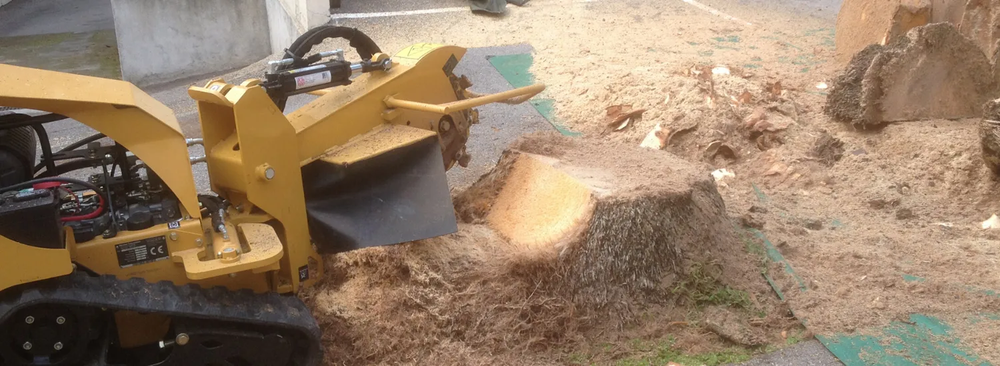

Dessouchage à Lambersart
Après un abattage, la souche reste dans le sol : elle gêne la tonte, abîme la pelouse et peut repartir en rejets. Le Ch’ti Élagueur retire les souches d’arbres et de haies pour vous rendre un terrain dégagé.
Notre savoir-faire
Pourquoi retirer une souche ?
Une souche prend de la place, attire parfois champignons et insectes, et empêche de replanter ou d’aménager à cet endroit. La retirer, c’est récupérer toute la surface de votre jardin.

Souches d’arbres et anciennes haies
Une grosse souche isolée ou toute une rangée de vieilles souches de haie : nous adaptons la méthode au diamètre, aux racines et à l’accès au terrain.
Un terrain prêt à l’emploi
Une fois la souche retirée, le trou est rebouché et les résidus sont évacués. Le terrain est libre pour ce que vous voulez en faire.

Abattage et dessouchage en une seule fois
Si l’arbre est encore debout, nous pouvons l’abattre puis retirer la souche dans la foulée : un seul interlocuteur, un seul chantier.
Votre devis, gratuit
Décrivez-nous les souches à retirer par téléphone au 06 04 43 98 99 ou avec le formulaire. Nous venons voir le chantier et nous vous remettons un devis clair, gratuit et sans engagement. Nous intervenons à Lambersart, dans la métropole lilloise et dans tout le Nord et le Pas-de-Calais.
Demander un devis gratuit
Nos autres services